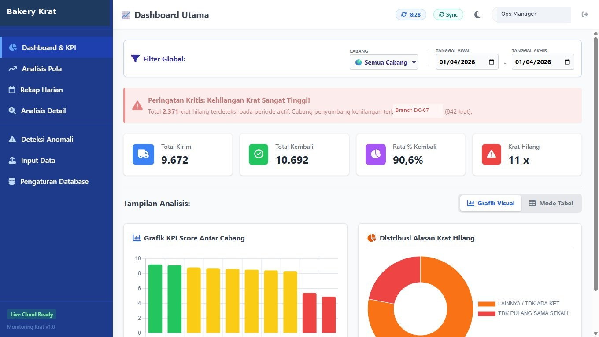

Crate Monitoring System
9,000–13,000 crates shipped daily across 11 distribution centers. Shortage investigations ran 10+ times a month, each requiring a full day of cross-checking across 11 spreadsheets. Now flagged automatically on import.
From Manual Count to Live Intelligence
Hundreds of Crates, No One Tracking Them
Every day, factory trucks delivered bread to 11 distribution centers using plastic crates. Crates were supposed to return the same day. Nobody was counting.
Live in Daily Use
Actual dashboard used by the ops team — KPI scores per DC, critical alert for missing crates, and distribution breakdown by loss reason. Runs in a browser tab, no installation.

Screenshot uses dummy data for confidentiality — UI layout, anomaly logic, and KPI scoring reflect the actual production build.
Built Around Real Operational Pain
Each feature maps directly to a problem the ops team faced — not a nice-to-have, but a daily workflow requirement.
, vs ; from first row645 → DOUBLE, 360 krat capacity — auto-filledHigher score = smaller gap between sent and returned
| Anomaly Type | Count | Action |
|---|---|---|
| Return > Truck Capacity | 3 | Input error — verify with driver |
| Sent — No Return Recorded | 7 | Driver follow-up required |
| Return — No Send Recorded | 2 | Check source DC records |
| DC Inactive >7 Days | 1 | Confirm DC operational status |
Zero-Install by Design
The distribution environment had no dedicated server and no DevOps. The architecture was built around that constraint from day one — not retrofitted to it.
index.html. React loaded via CDN, JSX transpiled in-browser by Babel Standalone. No npm, no build step, no deployment pipeline. Can be opened directly, sent via email, or saved to a USB drive. Known trade-off: Babel Standalone adds parse overhead on first load — acceptable at this scale (<500 rows, desktop environment), but a production rewrite would pre-compile JSX.localStorage can be blocked in private/incognito mode. A safe storage shim detects this and falls back to an in-memory _memStore transparently. If corrupted legacy data causes a crash, an ErrorBoundary catches it and shows a one-click “Reset Application” button that clears cache and reloads.